| 日付 | 2016年8月8日（月） - 2016年8月11日（木） | ||||||
|---|---|---|---|---|---|---|---|
| 山域 | 八ヶ岳、北アルプス | ||||||
| メンバー | 家族（妻、長女・5歳、長男・3歳） | ||||||
| 山行形態 | 子連れ3泊4日ホテル泊 | ||||||
| アクセス | 車、バス | ||||||
| ルート (Map1) |
|
今年の夏休みも帰省に合わせて旅行に行くことにする。
目標は日本アルプスだが、子供でも行ける山はあまり多くない。
昨年は木曽駒ヶ岳に登ったので、今年は乗鞍岳に行くことにする。
標高の高いところまでバスで行けるので、容易に登れる山だ。
1日目
中央道で長野に向かう。途中、釈迦堂PAで休憩。
甲府盆地の向こう側に南アルプスがきれいに見えている。本日は快晴だ。
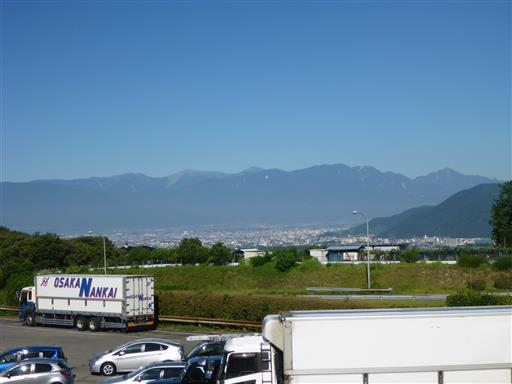
初日は美ヶ原に行く。山本小屋駐車場に車を停める。標高1940m。
娘が生後4ヶ月の時に来て以来の訪問だ。
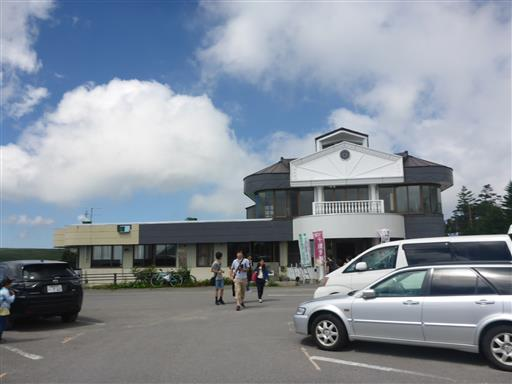
真夏なのに思った以上に涼しい。上着を着て歩き始める。
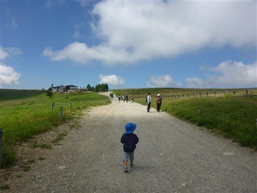
足元にナデシコの花が咲いている。
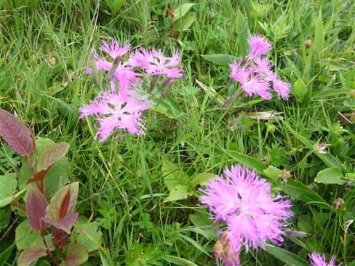
美ヶ原は広大な牧場だ。しばらく歩くと牛が見えてくる。
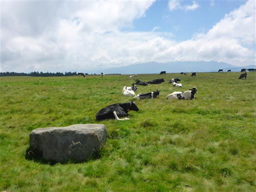
娘は柵の近くにいる牛を見つけて大喜び。間近で凝視している。

美しの塔に到着。
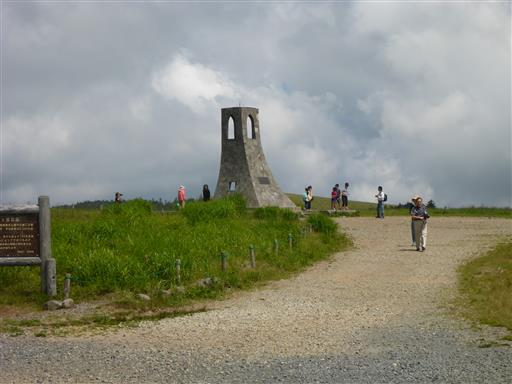
早速鐘を鳴らす。娘はぎりぎり手が届く。
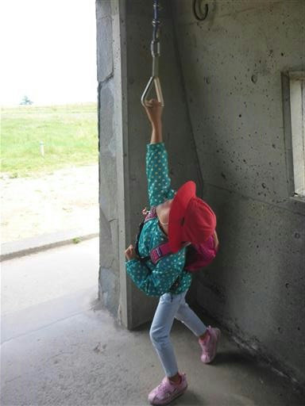
広い平地が続いている。標高2000mとは思えないような景色だ。
尾崎喜八は詩で「世界の天井が抜けた」と表現したが、正にそのような感じ。
前回来たときは曇っていたが、晴れていると本当に美しい場所だ。
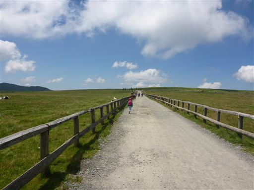
やたら足の短い馬が立っている。

美ヶ原の山頂部が見える。
人工物が無造作に並んでいるが、それなりに美しく見えるから不思議だ。

ハクサンフウロの花が満開で、あちこちで咲き乱れている。
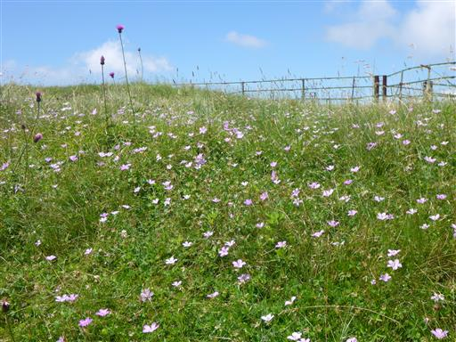
息子は眠いのかグズグズになって来る。
キャリアを持っているのだが、それには乗らず抱っこしろとうるさい。
娘は元気にダッシュだ。
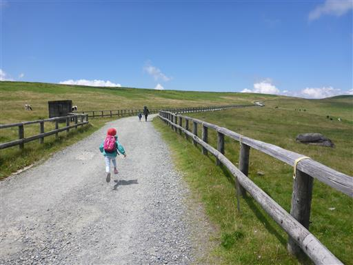
雲が山脈のように一列に並んでいる。
美ヶ原は北アルプスの展望が良い事で有名だが、残念ながら雲の中のようだ。
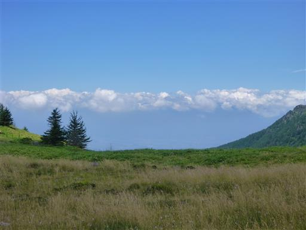
最後は少し登りがある。ここを登りきると山頂だ。
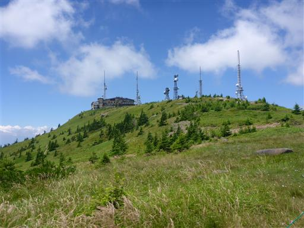
美ヶ原山頂の王ヶ頭に到着。山頂部はホテルとアンテナが占拠している。
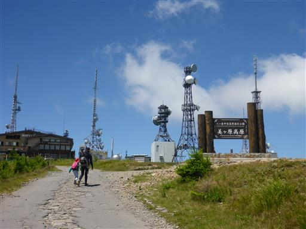
山頂からの展望。鉢伏山がきれいに見えている。
3年前の2013年に登った山だ。
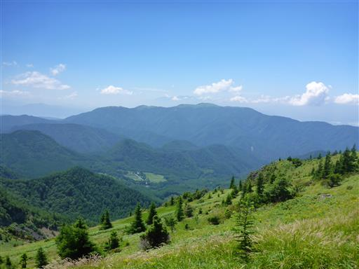
美ヶ原高原を見下ろす。右側は大きく崩壊している。
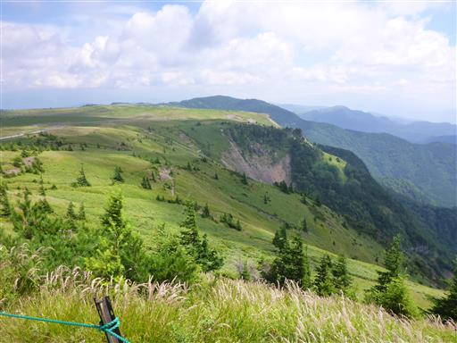
ホテルの裏に回って山頂標識のある場所に到着。標高2034m。
広場に腰を下ろして昼食をとる。
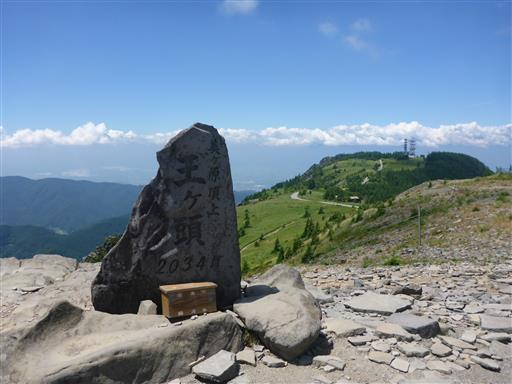
娘はトンボ捕りに夢中だ。
取り方を教えてあげると何度もトライし、帽子で2匹ほど捕まえていた。
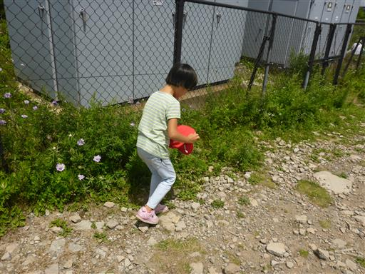
手を放すとトンボが大空に飛んでいく。
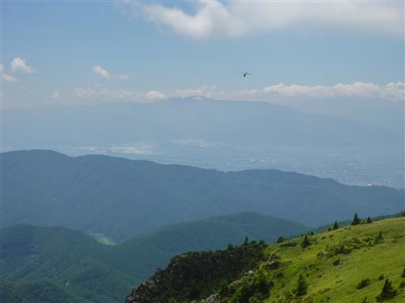
山頂でのんびり遊んだら、元来た道を引き返す。
昼食をとって元気になった息子はずっと走っている。
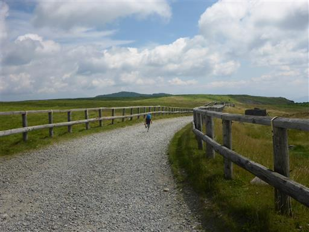
途中でねころび広場に立ち寄る。
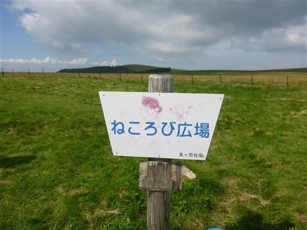
本日はあと宿に向かうだけなので、ここで一休み。草原の上で横になる。
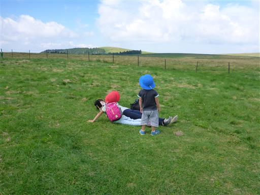
寝ころびながら青空と雲を眺める。すごく気持ちの良い場所だ。
しばらく寝転がったら駐車場に戻って本日の宿に向かう。
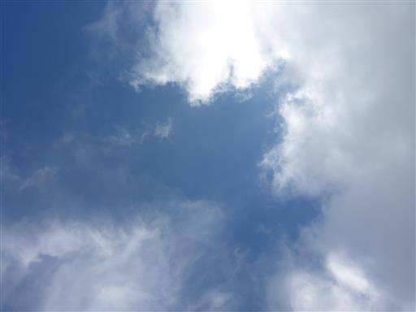
本日の宿泊地は乗鞍高原の美鈴荘。ここで2泊し、乗鞍岳を目指す予定だ。
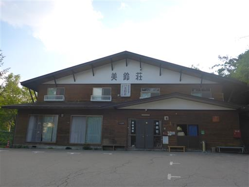